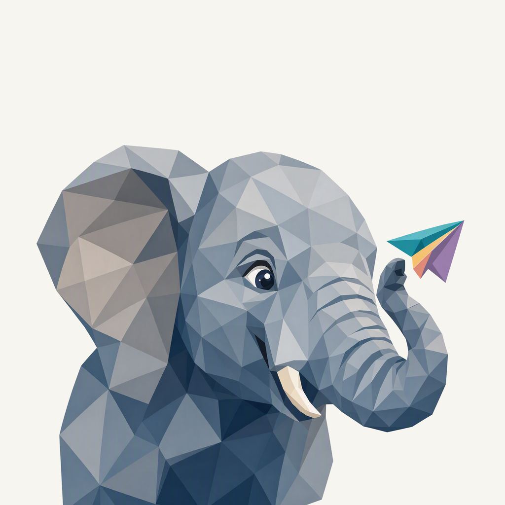
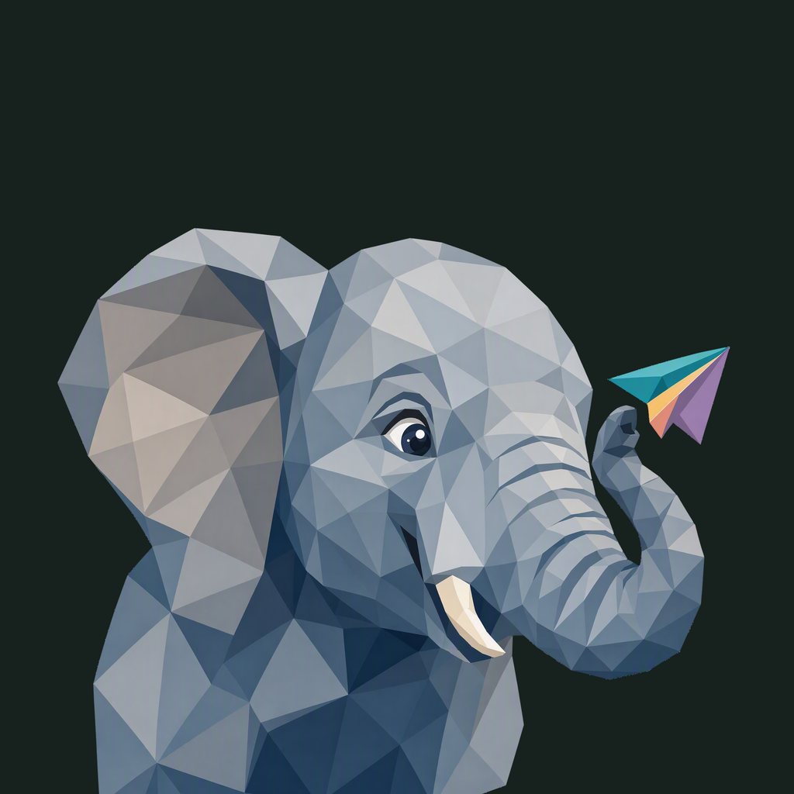

01 / Composition
An inquisitive lift
The broad ear and cheek carry the portrait while the trunk curls close to the face. A small paper airplane balances the gesture; only the natural lower neck enters the frame edge.
Animal family · Refined identity
An elephant lifts its trunk toward a paper airplane. Mineral blue-gray keeps the expression clear.
Adopted redesign · finishing 01
Native 2048 × 2048

01 / Composition
The broad ear and cheek carry the portrait while the trunk curls close to the face. A small paper airplane balances the gesture; only the natural lower neck enters the frame edge.
02 / Drawing
Slate and blue-gray facets establish the elephant as one clear mass. Warm ivory anatomy stays opaque; the airplane concentrates the colorful folded panels.
03 / Presentation
Unequal broad mineral panels meet along open diagonal seams. A deeper blue field, fine grain and two shallow shadows separate the ear and trunk.
Presentation tiles at 128/64 px; transparent artwork for small app and browser marks.
Ear edges, eye, tusk, curled trunk and the complete airplane retain at least 148.5 px of rounded-edge clearance. Only the lower neck crosses the frame. Admin marks stay transparent; separately configured forum logos and favicon remain independent.
A designed background, with colors sampled from the exact native artwork.
Select a swatch to copy its hex value. The Ellie UI primary (#016698) remains a separate product color.
One transparent foreground, checked on two contrasting backgrounds.


Azure Foundry · gpt-image-2 · one request · native 2048 × 2048
Loading study text…
The previous identity is historical context; the current brief defines the selected animal, gesture and palette. Frogie guides connected flat facets; these owner-provided boards guide the independent background, offset framing, and matte surface.


{kind=link}
{kind=link}
{kind=link}
{kind=link}
{kind=link}